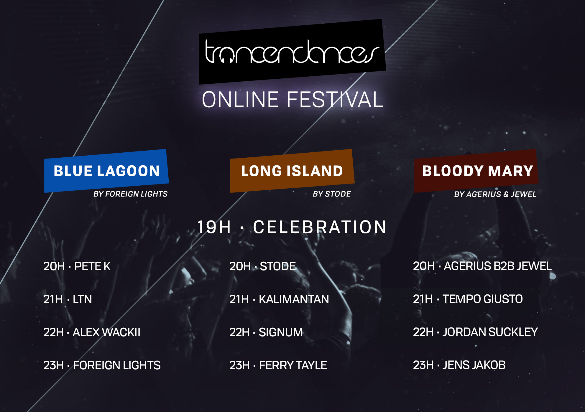

Festival
Programmation
Chat
Retour au site principal
Écouter dans votre lecteur favori
Écouter dans votre lecteur favori
Écouter dans votre lecteur favori
Cliquez sur l'image d'une salle pour l'écouter
Programmation

Chat